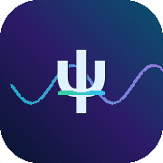

Quantum waves and where to find an electron
From water ripples to quantum probability — with moving diagrams, named symbols, and step-by-step mathematics.
How to use this guide
You do not need to be a professional physicist. If you have met sines, basic algebra, and the idea that light can behave as a wave, you are in the right place. We build intuition with moving pictures first, then connect each picture to the equations.
Central idea: for a quantum particle such as an electron, we do not predict a single definite position. We predict how likely it is to be found at each place. That information is encoded in a wave function ψ (psi) — and from ψ we obtain probabilities using Born’s rule (see section 8).
1. Classical waves first
Before electrons, get comfortable with a plain travelling wave. Along a line, height y at position x and time t can be written:
Read it as y = A sin(Θ) with Θ = kx − ωt + φ: Θ is the angle; A sin(Θ) is the height on the y-axis at that x and t.
- A — amplitude (how tall the wave is)
- k (wave number) — how rapidly the pattern repeats in space; related to λ (lambda, wavelength) by λ = 2π/k
- ω (omega, angular frequency) — how fast the phase angle changes in time (radians per second); ordinary frequency f (hertz) is f = ω/(2π) — see below
- v — wave speed along the line: v = ω/k (also v = fλ) — below
- φ (phi, phase) — see below; how the wave is lined up in space and time
The equation in plain language
The whole formula is one familiar pattern: height on the y-axis = amplitude × sine of an angle. Write the angle as Θ (theta):
Pick a place x and a moment t. Work out Θ from k, ω, and φ. sin(Θ) is a number between −1 and 1 (where you are on the repeating cycle). Multiply by A to get the actual height y on the vertical axis. The symbols kx, −ωt, and φ only exist to build that angle; they are not separate “height” terms.
Each piece of Θ = kx − ωt + φ is one idea:
-
① A — amplitudeHow tall the wave is. A = 0.75 means crests reach 0.75 above the middle line.
-
② sin(Θ) — the repeating shapeΘ = kx − ωt + φ is the phase angle at that x and t. The sine curve repeats every 2π radians in Θ; y = A sin(Θ) turns that angle into height on y (see the unit circle demo).
-
③ kx — ripples along the lineAs x increases, kx grows and the pattern repeats in space. Large k → short wavelength λ = 2π/k.
-
④ −ωt — the pattern movesAs t increases, −ωt shifts the shape along +x (wave travelling to the right).
-
⑤ φ — phase (offset)A constant added inside the sine. It slides the whole pattern along x, or at one point sets where you are on the cycle.
So at any (x, t): compute Θ = kx − ωt + φ, then y = A sin(Θ). The three parts of Θ are kx (position in space), −ωt (motion in time), and φ (offset) — only the angle goes into sine; A scales the result to a height.
Unit circle — how y follows Θ
On a circle of radius 1, pick an angle Θ from the positive x-axis. The point on the circle has coordinates (cos Θ, sin Θ). The vertical coordinate sin Θ is exactly the factor that goes into the wave height; multiply by amplitude A to get y = A sin(Θ). Drag Θ below and watch the height on the right match the blue vertical segment on the circle.
Interactive — angle Θ on the unit circle → height y = A sin(Θ)
Frequency f and wave speed v
The same angle Θ from the unit circle appears inside the travelling wave. Fix a place on the rope (x constant). Then Θ = −ωt + (constants), so as time passes the angle spins the same way as on the circle. One full turn of the circle (Θ increasing by 2π radians) is one complete oscillation up and down at that point.
Physicists often write ω in radians per second (how fast the angle changes). In everyday units we count cycles per second — that is the frequency f in hertz (Hz):
A cycle is one full 2π swing of the angle, so ω radians per second means ω/(2π) cycles per second. The time for one cycle is the period T = 1/f = 2π/ω.
In space, the pattern repeats every wavelength λ = 2π/k. In time, it repeats every period T. A crest (or any fixed point on the shape) travels along the line at the wave speed:
The second form is intuitive: each second the wave completes f cycles, and each cycle is λ long in space, so the pattern advances fλ metres per second. You can check: ω/k = (2πf)/(2π/λ) = fλ.
-
① At fixed x — link to the unit circleHeight is y = A sin(Θ) with Θ changing like the angle on the unit circle. When ω = 2π rad/s, the angle goes around once per second, so f = 1 Hz.
-
② Crests move — where v = ω/k comes fromA crest stays at the top of the sine, so kx − ωt + φ = π/2 (plus whole multiples of 2π). Solve for x: x = (π/2 − φ + ωt)/k. As t increases by 1 s, x increases by ω/k — that is v.
-
③ Same numbers, two viewsk and ω are radians per metre and per second; λ and f are “per cycle” in space and time. Use whichever pair feels clearer — they are tied by 2π.
Interactive — at one place the angle spins (f = ω/2π); the whole pattern drifts at v = ω/k
What is φ (phase)?
At a fixed position — take x = 0 — the height is
At t = 0 that is y(0, 0) = A sin(φ). So φ tells you where on the cycle the point starts on the vertical axis:
- φ = 0 → sin(0) = 0 (sine-like: zero height, rising) — like standard sin
- φ = π/2 → sin(π/2) = 1 (at the top) — like cos at the origin
- φ = π → zero again but falling; φ = 3π/2 → at the bottom
More generally, φ is an offset in the cycle. Two waves with the same A, k, and ω but different φ are the same shape shifted sideways — or, at one place on the rope, offset on the y-axis by a fraction of a cycle. That offset is what matters for interference.
Phase at one instant (t = 0) — drag φ or try sine / cosine presets
Worked examples (travelling wave)
Take A = 1, k = 1.6, ω = 2.2 (same scale as the animations). Use y(x,t) = A sin(kx − ωt + φ).
-
Example A — height at the origin, right nowx = 0, t = 0, φ = 0: y = sin(0) = 0 (on the midline, going up).
Same place with φ = π/2: y = sin(π/2) = 1 (crest at the origin). -
Example B — a crest elsewhere, frozen in timet = 0, φ = 0. A crest needs kx = π/2, so x = (π/2)/k ≈ 0.98 → y = 1.
-
Example C — why it “travels”Crest where kx − ωt + φ = π/2. So x = (π/2 − φ + ωt)/k. As t grows, x grows → crest moves right. Wave speed v = ω/k — see frequency & speed.
Travelling wave — watch the crest move; yellow dot tracks one place on the rope
Superposition — two waves
When two waves meet, they superpose: at each point you add their displacements. Crest on crest → bigger crest; crest on trough → cancellation. The phase slider on wave 2 sets the phase difference between them — that is what drives interference fringes.
Interactive — one wave or two superposed
2. Wave–particle duality
Light and matter both show wave-like and particle-like behaviour — but not as a simple “sometimes a ball, sometimes a ripple” in the same measurement.
- Particle-like: light arrives in discrete packets (photons); electrons hit a detector one at a time as dots.
- Wave-like: light and electrons produce interference and diffraction — patterns that require adding wave amplitudes.
The punchline: a single electron is not a tiny ball that secretly goes through only one slit. Its quantum description can include contributions associated with many paths; those contributions combine (interfere) before we turn them into a probability of where the dot appears.
3. Water waves: one slit, then two
Nothing teaches interference like ripples on water. A vibrating source sends circular waves. A barrier with a slit acts as a new source (Huygens’ principle: every point on a wavefront can spawn outgoing ripples). With one slit you see a spreading fan — diffraction. With two slits, ripples from each slit overlap: where crests align the water is higher (a bright fringe). Where crest meets trough the displacements cancel — the waves add to almost zero. Those dark fringes are therefore very slim lines (complete cancellation), not wide bands like the bright regions.
Top-down ripple tank — compare one slit vs two
Circular ripples leave the dipper (left), pass through the slit(s), and overlap to the right. The lower trace shows height along the centre line.
Reading the view
The tank shows moving ripples (crests and troughs). The green wash is a time average — it builds where waves keep reinforcing, so stripe spacing stays steady even while rings move. With two slits, the wide green bands are constructive interference (crest on crest). The narrow dark gaps between them are destructive: the two wave trains cancel almost completely, so little water moves there and the band looks thin. Compare those slim dark lines to the lower graph. Quantum electrons follow the same addition logic, but we add ψ, not water height.
4. The double-slit experiment
Send particles through two narrow slits onto a screen. Three famous outcomes:
- Classical particles (bullets): two clusters — one behind each slit.
- Classical waves (water, radio): many fringes from interference.
- Quantum objects (photons, electrons): dots arrive one by one, yet over time they fill in the wave fringe pattern.
Ripple intensity at the screen (two slits)
Bright fringes where path difference from the two slits differs by whole wavelengths.
Detection screen — particles vs waves vs quantum
Classical particles: two clusters, no fringes.
5. Feynman: sum over paths
Richard Feynman offered a vivid way to think about the double slit: a photon or electron does not travel a single classical path. In the quantum calculation we (conceptually) allow every possible path from source to screen — straight, wiggly, via either slit, and everything in between. Each path carries a little probability amplitude (a complex number with a phase). The observed probability is built from the sum of all those contributions.
Paths that differ slightly in length pick up slightly different phases. Where many paths add in phase, detection is likely; where they swirl out of phase, they cancel. That reproduces the same fringes as wave interference — without insisting the particle “went both ways” as a classical object.
Animated — sample of possible paths; colour = phase
Many paths contribute; no single path is “the” trajectory before detection.
S is the classical action along a path; ℏ (h-bar) sets the scale on which phase differences matter. You do not need to evaluate the sum for this guide — the picture is what matters.
6. Matter waves (de Broglie)
If a particle has momentum p, Louis de Broglie associated a wavelength:
Here h (Planck constant) is the same constant that links photon energy to frequency. Because h is tiny, everyday objects have wavelengths too short to show interference. Slow electrons have λ comparable to atomic scales — that is when wave effects dominate.
7. The wave function ψ
For one particle in one dimension, the state is described by ψ(x, t). It is generally complex: each point has a magnitude and a phase. Think of ψ as the recipe for how contributions combine — not as something you see directly on a meter.
Detectors show counts (dots, clicks). The link between ψ and those counts is Born’s rule — next section.
8. Born’s rule and probability density
Probability vs probability density
These words sound alike but mean different things:
- Probability is a number between 0 and 1 for a whole event (“found between here and here”).
- Probability density |ψ(x)|² tells you how densely probability is spread along the axis — like mass density tells you how mass is spread in space.
To obtain a probability for a small interval, multiply density by width:
For the whole line, the total must be 100%:
The integral adds up infinitely many thin strips — exactly the idea shown in the animation below.
Drag the window — see |ψ|² × Δx as a probability sliver
Born’s rule
Max Born proposed: the probability density for position is the squared magnitude of the wave function:
Why we add amplitudes before squaring
Suppose two slits contribute ψ₁ and ψ₂ at some point on the screen. The total amplitude is ψ = ψ₁ + ψ₂. The probability density uses the combined amplitude:
-
Step 1 — add amplitudesψ = ψ₁ + ψ₂
-
Step 2 — square magnitude|ψ|² = |ψ₁ + ψ₂|²
-
Step 3 — expand (real & imaginary parts, or “length times length”)|ψ₁ + ψ₂|² = |ψ₁|² + |ψ₂|² + 2 Re(ψ₁* ψ₂)
The last term 2 Re(ψ₁* ψ₂) is the interference term. It can be positive (bright fringe) or negative (dark fringe — near-complete cancellation, hence a slim band). Without it, you would only get two overlapping blobs — never the full pattern.
Compare |ψ₁|² + |ψ₂|² vs |ψ₁ + ψ₂|²
9. Particle in a box
A particle between walls at x = 0 and x = L has standing-wave solutions with integer n = 1, 2, 3, …:
Then |ψₙ|² is the probability density. For n = 1 the electron is most likely near the centre; for n = 2 there are two favoured regions and zero probability at the centre (a node).
Infinite square well
10. Schrödinger equation (gentle)
ψ is found by solving the Schrödinger equation. In one dimension:
Here ℏ and Ĥ (H-hat, Hamiltonian) encode how kinetic and potential energy shape the evolution. For a definite energy E, write ψ(x,t) = ψ(x) e^{-iEt/ℏ} to obtain:
The particle-in-a-box example is a simple solution of Ĥψ = Eψ. Hydrogen is richer — but the workflow is identical: solve for ψ, then read probabilities from |ψ|².